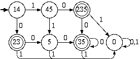
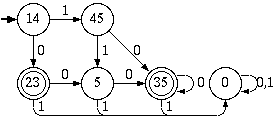
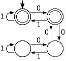

| a. Convert to a DFA  | b. Convert to a minimal DFA  | |
| c. Conver to a regular expression: 0 + (00 + 1 + 11)00* | ||
| d. Convert to a regular grammar using the NFA: A -> 0 | 0B | 1C | 1D B -> 0D C -> 1D D -> 0 | 0D Using the DFA: | S -> 0A | 1B A -> 0C | e B -> 0D | 1C C -> 0D Using the regular expression: | S -> 0 | 110A | 000A | 10A A -> 0 | 0A | e |
Assume that the language is regular. Let p be the pumping length, and choose s to be the string 0p10p10p1. Now we try to break it up into s=xyz. Since |xy| <= p and |y|>0, y can only contain 0's. When we pump the string even just once we get xy2z = 0p+|y|10p10p1, and this is not of the form www, since |y| > 0. This contradicts the pumping lemma, so the language is not regular.
We know that
{0n1n | n >= 0} = {0m1n | m,n >= 0}^{0*1*}c,
where we are using ^ to denote intersection and c to denote complement.
The proof is by contradiction. If {0m1n | m is not equal to n}
really were regular then {0n1n | n >= 0} would also be regular
because 0*1* is regular and because of the closure properties of regular sets. Therefore it
can't be regular
There is a direct way to prove it as well: If p is the pumping length and we take the string s = 0p1p+p!, then no matter what the decomposition s = xyz is the string xy1+p!/|y|z will equal 0p+p!1p+p! which is not in the language.
Assume that the language is regular. Let p be the pumping length, and choose s to be the string 0p10p. Now we try to break it up into s=xyz. Since |xy| <= p, y can only have zeros in it. Now xyjz = 0p+ (j-1) |y|10p, and since |y|>0 the number of 0's on the left and right sides of xyjz will not be the same for any j>1 so xyjz will not be in the language, contradicting the pumping lemma. Therefore {0m1n0m | m,n >= 0} is not regular
This can be decided by the DFA below.

This description is somewhat misleading. Since w can represent any string and x can be 0 or 1, this is the same as all strings which begin and end with the same character. This is easily seen to be a regular language.
Assume that the set is regular. Let p be the pumping length. Without loss of generality we can assume that p is at least 2. (We can always increase the pumping length. We only do this because some of our calculations don't work for p = 1) Then, according to the pumping lemma, we can break the string s=0p! into s=xyz where y has positive length and |xy| <= p. Then s=xy2z = 0p! + |y| must also be in the language, so p!+|y| must also be a factorial. But (p+1)!-p! = (p)p! > p >= |y| so it follows that p! + |y| < (p+1)!, and therefore p! + |y| is not a factorial. This is a contradiction so the language cannot be regular.
To prove this language is not regular, we instead examine the complement because the set of regular languages is closed under complement. Assume that the set is regular. Let p be the pumping lenght of the language. Then, according to the pumping lemma, we break the string s=0p into s=xyz where y has positive length. Then, s=xyiz = 0p + (i-1) |y| must also be in the set for any i. In particular let i = p+1. Then xyp+1z=0p+p|y| must be in the set so p + p|y| = p(1 +|y|) must be prime. Thus we have a contradiction and the set cannot be regular.
The flaw in the proof is the following: if p is the pumping length of 0*1* and s = 0p1p is decomposed into xyz in the usual manner then s absolutely positively can be pumped since xyjz is equal to 0p+(j-1)|y|1p which will still be in 0*1*.
The pumping lemma only states that if a language is regular, then it can be pumped. The converse, if a language can be pumped, then it is regular, is not necessarily true, so irregular languages may satisfy the pumping lemma's conditions without contradicting it. In this particular case of
{aibjck | i,j,k >= 0,if i=1 then j=k},
if s is any string in the given language then the decomposition s = xyz with x = the empty string, y = to the first character of s, z = the rest of s, will always work with the pumping lemma. The resulting xyjz will always be in the language.
Given a DFA, M, we can determine if it accepts all strings of the form 0*1* by taking its complement and intersecting it with the DFA which accepts 0*1*, and then minimizing the resulting DFA. If the result is the machine that accepts nothing, then accept M, otherwise reject M.
Given a DFA, M, we can determine if it is cofinite by taking its complement and then checking to see whether the result has any cycles from which an accept state is reachable. If it does not, then accept M, otherwise reject M.
Given a DFA, M, we can determine if it accepts at least one string of the form 111 by intersecting it with another DFA which accepts (0+1)*111(0+1)* and minimizing the resulting DFA. If the result accepts anything, then accept M, otherwise reject M.
The DFA is constructed by making state 1 the initial state, setting the j-th state to accept if and only if the j-th bit of the number f is a 1, adding a transition on 0 from state j to state j+1 for 1<= j <= j-1 and finally if m is not zero, adding a transition from state n to state n-m+1. The language constructed from this DFA will finite if m=0, and otherwise will be eventually periodic, of period m.
It pretty easy to see from the above description that, up to a finite set, every regular language over 0 is of the form
(0b_1 + 0b_2 + ... + 0b_k)(0m)*,
for some choice of m, where {b_1, b_2, ..., b_k} is some subset of {0,1,2,...,m-1}